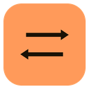

<!DOCTYPE html>
<html lang="zh-CN">
<head>
  <meta charset="UTF-8" />
  <meta name="viewport" content="width=device-width, initial-scale=1" />
  <title>划译 · 生词本</title>
  <link rel="stylesheet" href="styles/base.css" />
  <link rel="stylesheet" href="styles/main.css" />
</head>
<body>
  <div class="app">
    <aside class="side">
      <div class="brand">
        
        <span class="name">划译</span>
        <span class="ver">v0.1</span>
      </div>

      <nav id="nav">
        <button data-view="vocab" class="on">
          <svg viewBox="0 0 24 24"><path d="M4 5h11a2 2 0 012 2v12H6a2 2 0 01-2-2V5zM4 19a2 2 0 012-2h11"/><path d="M9 9h5"/></svg>
          生词本
          <span class="badge" id="navCount">0</span>
        </button>
        <button data-view="review">
          <svg viewBox="0 0 24 24"><path d="M12 3l9 16H3l9-16zM12 10v4M12 17h.01"/></svg>
          复习
          <span class="badge" id="navDue">0</span>
        </button>
        <button data-view="settings">
          <svg viewBox="0 0 24 24"><circle cx="12" cy="12" r="3"/><path d="M12 2v3M12 19v3M4.2 4.2l2.1 2.1M17.7 17.7l2.1 2.1M2 12h3M19 12h3M4.2 19.8l2.1-2.1M17.7 6.3l2.1-2.1"/></svg>
          设置
        </button>
      </nav>

      <div class="side-foot">
        在任何窗口里<b>划选</b>英文<br />
        上方会浮出翻译按钮<br /><br />
        按 <kbd id="sideHotkey">Alt+D</kbd> 在鼠标处唤起翻译
      </div>
    </aside>

    <main id="main"></main>
  </div>

  <script src="main.js"></script>
</body>
</html>
